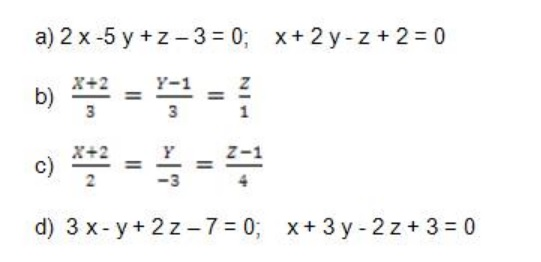
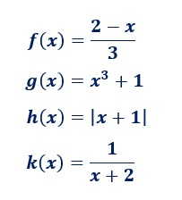

Álgebra
El álgebra (del árabe: الجبر al-ŷabr ‘reintegración, recomposición’)1 es la rama de la matemática que estudia la combinación de elementos de estructuras abstractas acorde a ciertas reglas. Originalmente esos elementos podían ser interpretados como números o cantidades, por lo que el álgebra en cierto modo originalmente fue una generalización y extensión de la aritmética.23 En el álgebra moderna existen áreas del álgebra que en modo alguno pueden considerarse extensiones de la aritmética (álgebra abstracta, álgebra homológica, álgebra exterior, etc.).
Videos
El álgebra desde cero. Después de estudiar en detalle como funcionan las sumas, restas, multiplicaciones, divisiones de números y conocer sus propiedades más importantes, es hora de adentrarse en el estudio del álgebra. El álgebra es una parte de las matemáticas que se estudia a partir de la educación secundaria en todo el mundo. El álgebra se trata de lo mismo que la aritmética con los números, pero extendido al uso de las letras y símbolos, más generales que los números. El objeto del álgebra son las operaciones básicas entre expresiones algebraicas, siendo los polinomios un ejemplo continuamente usado de estas expresiones algebraicas y también las relaciones que pueden mantener.
¿Sabías Qué?
Una variable es una letra (generalmente x) que representa un número no conocido de antemano. Las variables suelen emplearse en expresiones algebraicas o en fórmulas para posteriormente asignarles un valor. Sustituir la variable x por un número significa escribir dicho número donde aparece la variable x.
Aprende Jugando
Calcular
y = -3 - x
sabiendo que x = 0 .
Dejanos tus Comentarios
Álgebra Lineal
El álgebra lineal es una rama de las matemáticas que estudia conceptos tales como vectores, matrices, espacio dual, sistemas de ecuaciones lineales y en su enfoque de manera más formal, espacios vectoriales y sus transformaciones lineales. Es un área activa que tiene conexiones con muchas áreas dentro y fuera de las matemáticas, como el análisis funcional, las ecuaciones diferenciales, la investigación de operaciones, las gráficas por computadora, la ingeniería, etc. La historia del álgebra lineal moderna se remonta a 1843, cuando William Rowan Hamilton (de quien proviene el uso del término vector) creó los cuaterniones inspirado en los números complejos1; y a 1844, cuando Hermann Grassmann publicó su libro Die lineare Ausdehnungslehre (La teoría lineal de extensión).
Videos
CONOCE la IMPORTANCIA que HOY en DÍA tiene el ÁLGEBRA LINEAL en los NEGOCIOS y porque la INFORMACIÓN es el NUEVO PETRÓLEO del MUNDO 💰, además de PRESENTAR el CURSO BASADO en el MIT de ÁLGEBRA LINEAL COMPLETO y DESDE CERO 🏆
¿Sabías Qué?
El álgebra lineal es una rama de las matemáticas que estudia conceptos tales como vectores, matrices, sistemas de ecuaciones lineales y su enfoque de manera más formal, espacios vectoriales y sus transformaciones lineales. Es un área activa que tiene conexiones con muchas áreas dentro y fuera de las matemáticas, como el análisis funcional, las ecuaciones diferenciales, la investigación de operaciones, las gráficas por computadora, la ingeniería, etc.
Aprende Jugando
Transforme las ecuaciones de las rectas dadas a continuación a la forma simétrica o la forma general, según sea el caso:

Dejanos tus Comentarios
Funciones Cuadráticas
En álgebra, una función cuadrática, un polinomio cuadrático, o un polinomio de grado 2, es una función polinómica con una o más variables en la que el término de grado más alto es de segundo grado. Por ejemplo, una función cuadrática en tres variables x, y, y z contiene exclusivamente los términos x2, y2, z2, xy, xz, yz, x, y, z, y una constante:
f(x,y,z)=ax^{2}+by^{2}+cz^{2}+dxy+exz+fyz+gx+hy+iz+j,
con al menos uno de los coeficientes a, b, c, d, e o f de los términos de segundo grado que no son cero. Una función cuadrática univariada (variable única) tiene la forma1
f(x)=ax^{2}+bx+c, a\neq 0}
con una sola variable, en este caso x. La gráfica de una función cuadrática univariada es una parábola cuyo eje de simetría es paralelo al eje y, como se muestra a la derecha.
Si la función cuadrática se establece igual a cero, entonces el resultado es una ecuación cuadrática. Las soluciones a la ecuación univariable se denominan raíces de la función univariable.
El caso bivariable en términos de las variables x e y tiene la forma
f(x,y)=ax^{2}+by^{2}+cxy+dx+ey+f
con al menos uno de los coeficientes a, b o c no iguales a cero. Una ecuación que establece esta función igual a cero da lugar a una sección cónica (una circunferencia u otra elipse, una parábola o una hipérbola).
En general, puede haber un número arbitrariamente grande de variables, en cuyo caso la superficie resultante se llama cuadrática, pero el término de grado más alto debe ser de grado 2, como x2, xy, yz, etc.
Videos
Explicación de una forma de graficar funciones cuadráticas encontrando el vértice y encontrando puntos mediante una tabla de valores, dentro del curso de Funciones.
¿Sabías Qué?
La función cuadrática se puede expresar de dos formas diferentes:
| Forma Polinómica | Forma Canónica |
| y=ax^2+bx+c | y=a(x-h)^2+k |
Aprende Jugando
1. calcular el valor de la pendiente de una recta que tiene un angulo de inclinacion de:
a)45° b)67° c)30° d)53° e)27°
2. Calcular el valor de la pendiente de una recta que pasa por los puntos:
a)(3;5) y (7;9)
Dejanos tus Comentarios
Despejar Variables
En matemáticas y en lógica, una variable es un símbolo constituyente de un predicado, fórmula, algoritmo u de una proposición. El término «variable» se utiliza aun fuera del ámbito matemático para designar una cantidad susceptible de tomar distintos valores numéricos dentro de un conjunto de números especificado.1 Por el contrario, una constante es un valor que no cambia (aunque puede no ser conocido, o indeterminado). En este contexto, debe diferenciarse de una constante matemática, que es una magnitud numérica específica, independientemente de la naturaleza del problema dado.
Videos
Explicación de la forma de realizar el despeje ecuaciones o despeje de variables o despeje de fórmulas en una ecuación cuando en los miembros de la ecuación hay un solo término, ejemplos con ecuaciones conocidas como la del perímetro o de la velocidad, dentro del curso de Despeje de ecuaciones.
¿Sabías Qué?
Cuando X se encuentra Sumando, como un Término libre, lo que se hace es pasar el resto de los términos al otro lado del Signo “=” de la igualdad, poniéndoles el signo opuesto. Ya la X queda sola en el lado principal de la igualdad.
Cuando X se encuentra Restando, como Término libre, hay primero que pasarla al lado opuesto, para tenerla con el signo positivo, y después la dejamos sola, trasladando el resto de los términos al lado opuesto con signo contrario.
Cuando X se encuentra Multiplicando, es decir, Multiplicando, es posible dejarla libre pasando los factores que la acompañan Dividiendo al otro lado.
Cuando X se encuentra Dividiendo, acompañada sólo por factores (que multiplican) se puede pasar al lado opuesto, ahora multiplicando.
Aprende Jugando
Despeja a en la expresión:
c+d=4a-b
Dejanos tus Comentarios
Función Inversa
En matemáticas, especialmente en análisis matemático, si f es una función que asigna elementos de I en elementos de J, en ciertas condiciones será posible definir la función f -1 que realice el camino de vuelta de J a I. En ese caso diremos que f -1 es la función inversa de f.
Videos
En este video se explica cómo determinar la inversa de una función.
¿Sabías Qué?
Si una función f consiste en elevar al cuadrado y otra función g consiste en extraer la raíz cuadrada, cada una neutraliza lo que hace la otra. Las funciones f y g son una inversa de la otra. que son una inversa de la otra. Tenemos la función y=f(x), y queremos hallar su inversa.
Aprende Jugando
Determinar si las siguientes funciones de R en R son o no inyectivas o subyectivas:
